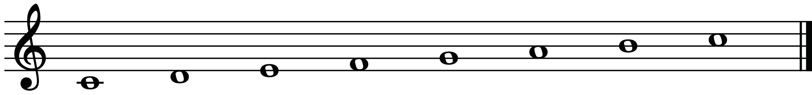
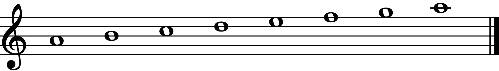

Relative major and minor keys
In music, every major key has a relative minor, and every minor key has a relative major. A major key that shares the key signature with a minor key is a relative major of that particular minor key. On the other hand, a minor key that shares the key signature with a major key is a relative minor of that particular major key. Even though they have the same key signature, a minor scale and its relative major sound different. A relative minor key always starts on the 6th degree or solfege la of the corresponding major scale. Figure 2.29 shows how to identify a relative minor key in the C major scale by observing the 6th degree or solfege la of the scale.

Therefore, from note ‘A’, which is the 6th degree or la of the C major scale, an ‘A’ minor scale can be constructed as a relative minor of the C major scale. Figure 2.30 shows the ‘A’ minor scale.

Figure 2.30: The ‘A’ minor scale
Figure 2.31 shows how to identify a relative minor key in the F major scale.